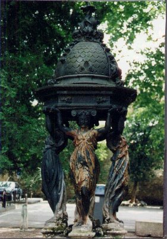
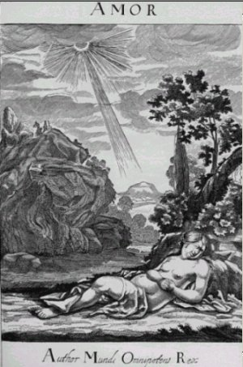
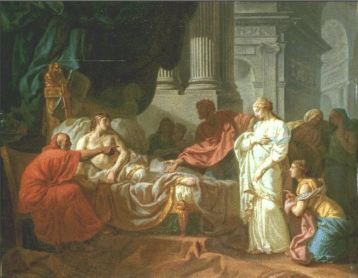

EMBLEMA XLVIII.
revu le 10 mai 2002
Rex ab aquis potatis morbum, à medicis curatus sanitatem obtinet.
(Le Roi, ayant bu des eaux, a contracté un mal et, soigné par les médecins, il obtient la santé1.)Riche en peuples, en biens, un roi aimait les eaux
D’une source, et s’en fit apporter par ses gens.
Il en boit longuement ; ses veines s’en emplissent.
Pâle, il est assisté par de grands médecins.
Et quand ils l’ont purgé par la sueur, le ventre,
La bouche, on voit ses joues qui se teignent de roses2.Alors que Xerxès3, le fameux et très puissant roi de Perse, conduisait son armée à travers des lieux secs et incultes sous la chaleur ardente, il ne cracha pas quelques gouttes d’eau trouble qu’un soldat lui présentait, mais il les but avec beaucoup de plaisir et récompensa celui qui lui avait apporté cette offrande par un très riche présent. Et certes si quelqu’un à notre époque même (ainsi que l’attestent certaines histoires très récentes) voyage aux confins de la Perse, il ne trouve que rarement, dit-on, des fontaines d’eau douce, car les eaux stagnantes y sont salées et le sol lui-même présente une grande abondance de substance salée à sa surface4. De même le roi dont les philosophes ont fait mention est tourmenté par la soif et a donné l’ordre qu’on lui prépare une grande quantité d’eau douce et, quand on la lui a apportée, il boit jusqu’à satiété, comme chacun peut le voir d’après l’allégorie de Merlin5. La guérison du roi malade et ayant perdu toute couleur est entreprise par divers médecins. Les Egyptiens chassèrent les humeurs encore crues en faisant boire leurs médecines, humeurs dont Hippocrate affirme qu’on doit les purger quand elles ont subi une coction, à moins qu’elles ne soient fluides et mobiles. Alors en effet il faut les faire sortir rapidement pour éviter qu’elles n’attaquent et n’assaillent des parties ou des viscères plus nobles. C’est de là que sont survenus chez le roi des symptômes dangereux, comme la lipothymie et la syncope. Les médecins alexandrins arrivant les derniers auprès d’un mal devenu chronique furent tenus pour plus heureux puisqu’ils rendirent le roi à sa santé primitive.
Prodiguer des soins à un si grand roi paraît chose nécessaire, puisque lorsqu’il a été guéri il offre à son médecin une main bienveillante et un visage serein. Noua lisons qu’un grand nombre de guérisons furent récompensées par divers rois de façon magnifique. Ainsi Démocrite reçut deux talents de Polycrate6, tyran de Samos ; Erasistrate7 (qui, selon Pline, fut le disciple de Chrysippe8 et eut pour mère la fille d’Aristote), pour avoir guéri le roi Antiochus que rendait malade l’amour de sa belle-mère Stratonice9, obtient cent talents de son fils Ptolémée ; Jacques Coctier, médecin du roi de France Louis II, reçut de celui-ci, comme honoraires, une pension mensuelle de quatre mille couronnes10 ; et nous ne faisons pas mention d’autres, plus récents. Mais la guérison de notre roi est récompensée par un présent et un prix bien plus grands encore. Hermès et Geber disent en effet dans le Rosaire :« Celui qui aurait accompli une seule fois cet art, s’il devait vivre mille ans et nourrir tous les jours quatre mille hommes, ne serait pas dans le besoin ».
Et Senior11 le confirme en disant :
« Celui qui possède la pierre de laquelle on tire l’élixir est aussi riche que celui qui possède le feu. Il peut donner du feu à qui il veut, quand il veut et autant qu’il veut, sans danger ni manque pour lui. »
Le père de Démocrite fut si riche qu’il donna un banquet à l’armée de Xerxès, et un certain Pythius offrit au même roi la solde et le ravitaillement de son armée pour cinq mois, à condition qu’il ne contraignît pas son fils cadet, unique consolation de sa vieillesse, à se rendre dans le camp royal et qu’il lui permît de le garder chez lui. Mais le roi barbare, accueillant d’une façon très indigne la requête de Pythius, ordonna que son cadet fût tranché en deux parties et fixé sur des pals de chaque côté de la voie royale par laquelle l’armée tout entière devait passer, comme le note Sabellicus au Livre II de la III Ennéade12.
Pourtant les richesses des hommes ne sont rien en comparaison des biens de ce roi, qui sont sans mesure et sans nombre. Lorsqu’il a été guéri et libéré des eaux, tous les rois et tous les puissants des autres pays l’ont honoré et craint. Et quand ils voulaient voir l’un de ses miracles ils plaçaient dans le creuset une once de mercure bien lavé et projetaient dessus comme un grain de mil de ses ongles, de ses cheveux ou de son sang, chauffaient légèrement avec des charbons, laissaient le mercure refroidir avec les autres corps, et trouvaient la pierre que je sais. C’est le roi dont le comte Bernard13 rappelle qu’il donne à six de ses conseillers autant de son royaume qu’il en possède lui-même, pourvu qu’ils attendent qu’il ait recouvré la jeunesse dans le bain et ait été paré de vêtements variés, à savoir, d’une cuirasse noire, d’une robe blanche et de sang pourpre14. Car il promet de donner alors à chacun de son sang et de les rendre participants de ses richesses.
NotesIl n'y a rien de très nouveau dans ce chapitre ; c'est l'occasion pour Michel Maier, en rapport avec sa profession de médecin, de rappeler certaines cures heureuses de ses prédécesseurs. Nous avons donc largement puisé dans d'autres sources - sur le web essentiellement - les notes que l'on lira ci-dessous.
1. Tous les alchimistes ont insisté sur l'exposition du roi à l'eau de la fontaine de jouvence, qui le détruit dans un premier temps, pour le régénérer en une forme supérieure. Maier a déjà joué sur ce thème à plusieurs reprises dans ces emblèmes [Atalanta, XX et XXIV]. Par ce traitement, il commence à contracter de l'hydropisie [ascite simple ou anasarque ? le texte ne le dit pas]. On ne peut le guérir qu'à force de la faire suer [idrow]. Et bien habile [idriV] sera celui qui saura bâtir ce fondement [idruma, on voit d'ailleurs une énorme colonne soutenir le toit, en arrière plan de l'emblème] par son Mercure, futur temple qui servira d'abri à son Soufre.

FIGURE I
(fontaine Wallace, 1884 - Besançon - cliché Alain Mauranne)La figure I montre, à très peu près, ce que l'Artiste doit obtenir de son roi durant la Grande coction dans la fontaine de jouvence. Un énorme cimier est soutenu par quatre Bacchantes.
2. Parabole sur le blanchiment du laiton : on purge le roi ce qui revient au même, c'est-à-dire qu'on le purifie [kaqairw] avec une coupe d'eau divine [polysulfure de potassium : eau divine de Zosime], faite d'argile [keramoio]. La pâleur est le signe du soufre.
3. sur Xerxès : [XhrkeV], symbolise la terre ferme. Nous restons dans le cadre de l'emblème précédent.
http://perso.club-internet.fr/magneb/lexperec/x/xerxes.html
http://perso.wanadoo.fr/spqr/xerxes.htmroi perse (486-465 av. J.-C.) désigné comme successeur par Darius. Il réduit la révolte d'Egypte en 484 et nomme son frère, Akhémeris, satrape. En 484, il écrase la révolte babylonienne. Babylone est mise à sac, les temples sont pillés y compris le trésor de Bel-Marduk, la population emmenée en captivité. Babylone est définitivement rayée de la carte. A l'automne de 481, sur l'insistance de Mardonios, il prépare une expédition contre la Grèce (Deuxième Guerre Médique). Tous les peuples de l'empire fournissent leurs contingent. Selon Hérodote, cette armée est gigantesque : 1.700.000 fantassins, 80 000 cavaliers, 20 000 hommes montés sur les chars de guerre et les chameaux, 3.000 vaisseaux de charge, 1.207 navires de guerre portant 517.610 hommes, plus 324 000 hommes fournis par la Thrace et les provinces européennes voisines, soit au total 2.641.610 combattants et, en non-combattants, un nombre à peu près égal. Ces chiffres sont fortement exagérés certes, mais ils n'en donnent pas moins l'impression d'un gigantesque effort. L'importance de l'armée lancée contre la Grèce implique une invasion par terre. Pour assurer l'avancée de l'armée perse, Xerxès fait percer un canal dans la péninsule du mont Athos [1, 2] et établir un pont permanent sur les Dardanelles entre Sestos et Abydos. Xerxès soumet rapidement la Thessalie et la Macédoine. La coalition grecque est écrasée aux Thermopyles, puis les Perses s'emparent de l'Attique et d'Athènes, qu'ils incendient. Malgré ces succès, la flotte perse fut détruite à Salamine en 480. Dépité, Xerxès retourna en Perse, qu'il ne quittera plus. L'attitude de Xerxès durant la deuxième guerre médique est tout à fait significative du comportement oriental que méprisaient les Grecs. Le pont ayant cédé à la suite d'une tempête, Xerxès ordonna de battre les eaux de l'Hellespont de trois cents coups de fouet, de jeter dans la mer une paire d'entraves, et de la marquer d'un fer rouge. Il fit par surcroît mettre à mort tous ceux qui avaient dirigé la construction de l'ouvrage. Lorsque commença le passage, au lever du soleil, Xerxès, avec une coupe d'or, fit une libation dans la mer, et, tourné vers le soleil, il demanda au dieu de ne rencontrer dans son expédition aucun obstacle capable de l'arrêter avant qu'il eut atteint les dernières limites de l'Europe. Au combat des Thermopyles, les chefs perses pousseront leurs soldats en avant à coups de fouet. A la bataille de Salamine, c'est assis sur son trône que Xerxès assistera au combat.
4. Allusion au salpêtre et peut-être aussi au borax. Un traité où le nitre est très souvent évoqué est l'Escalier des Sages, livre III de Barent Coenders Van Helpen.

FIGURE II
(gravure du livre III de l'Escalier des Sages)Cette gravure évoque celle qui figure au frontispice du Mutus Liber ; les trompettes sont remplacées par un rayon igné et le jeune homme a fait place à une jeune femme, comme lui endormie. A gauche, un massif qui n'est pas sans évoquer le dragon babylonien [Atalanta, XXV]. Sur le borax et les traits de cabale qui y sont attachés, voyez le commentaire du Verbum Dimissum du Trévisan.
5. L'allégorie de Merlin est la suivante :Un roi s'apprête à partir en guerre. Avant de se mettre en route, il se fait apporter par un serviteur son « eau de prédilection ». A peine a-t-il bu que ses veines se gonflent et qu'il pâlit. Il ne peut plus enfourcher son cheval et se fait emmener par ses soldats dans une chambre claire et chaude afin d'y transpirer pendant un jour et une nuit entiers l'eau qu'il a bue. Lorsque ses gens viennent le trouver, il est mort. Ses parents, accablés, font venir lesLes avis sur l'interprétation de ce texte sont partagés : alors que Herwig Buntz [Alchimie, Belfond, 1972] y voit un procédé de purification de l'or, F. Hoefer en tient pour les deux principaux procédés de l'analyse chimique, la voie sèche et la voie humide, le feu et l'eau...En tout cas, le style rappelle le type gréco-syriaque du Nouveau Testament. L'allégorie figure au volume II de la Bibliotheca Chemica Curiosa de Jean-Jacques Manget [Chouet, Geneva, 1702. 2 volumes]. Le merlin désigne aussi une sorte de marteau avec lequel on concasse la matière [procédé de Leblanc] dans la préparation du sel admirable de Glauber [sulfate de soude]. Il n'est pas impossible qu'il y ait un rapport avec la préparation de ce sel et l'allégorie de Merlin : on y évoque un roi, alors que les éléments du Rebis n'ont pas été cités ; mais il est possible qu'il s'agisse d'une interpolation. Le roi Merlin est évoqué par Nivolas Flamel dans son Désir Désiré et par Trévisan dans son Verbum.
plus célèbres médecins d'Égypte et d'Alexandrie. Après quelques disputes de préséance, les médecins égyptiens se mettent à l'oeuvre. Ils hachent le roi en petits morceaux, les mêlent à leur médecine et le ramènent dans la salle. Le roi ressuscite, on le lave et il est rénové, mais il meurt à nouveau. Bien que les médecins assurent que tout cela est nécessaire à sa résurrection, ils sont chassés et traités d'imposteurs. Les parents veulent alors enterrer leur fils, mais les médecins d'Alexandrie les retiennent et leur promettent de ranimer le roi et de le rendre plus puissant. Il est à nouveau mis en pièces, lavé et séché. La médecine avec laquelle on le traite à présent consiste en une part de sel armoniac, deux parties de nitrum alexandrinum, des cendres et de l'huile de lin. On met le tout dans un creuset dont le fond est troué et qui est contenu lui même dans un autre creuset. Mis au feu, le roi fond et s'éveille dans le second creuset, à nouveau en vie et si puissant que tous ses ennemis se soumettent à lui de plein gré. Son sang accomplit des merveilles : si on le mêle à du vif-argent, il en résulte une pierre qui change le plomb et le cuivre en or. Si on pile cette pierre et qu'on la mêle à du sel et à de l'or et qu'on la malaxe avec du lait de chèvre, elle est bonne « à toutes sortes d'usages.
6. sur Polycrate :
http://www.cliohist.net/antique/grece/class/sources/polycrate1.html
http://perso.wanadoo.fr/spqr/polycrate.htmVoici d'abord cet extrait de Hérodote :
[39] [...] Les Lacédémoniens étaient en campagne contre Samos et Polycrate, fils d'Aïakès, qui s'était emparé de Samos par une révolte. II avait tout d'abord partagé l'Etat en trois parts et s'était associé ses frères Pantagnotos et Syloson ; puis, après avoir tué l'un d'eux et banni le plus jeune, Syloson, il était devenu le maître de l'île entière. A ce moment, il avait noué des relations d'hospitalité avec le roi d'Egypte Amasis, en échangeant avec lui des présents. Sa puissance s'accrut en peu de temps et fit parler d'elle en Ionie et dans le reste de la Grèce, car la fortune lui souriait partout où il portait ses armes. Il avait cent pentécontères et mille archers ; il attaquait et pillait indistinctement tout le monde, car il prétendait faire plus de plaisir à un ami en lui rendant ce qu'il lui avait enlevé que s'il ne lui avait rien pris pour commencer. Il avait conquis un bon nombre des îles et beaucoup des villes du continent ; il avait notamment vaincu sur mer et pris les forces entières des Lesbiens, qui s'étaient portées au secours de Milet, et il fit creuser par les captifs le fossé qui entoure les remparts de Samos.Polycrates prend le pouvoir par une révolte. Une autre source, celle de Polyen au IIe siècle après J.-C, avec les Stratagèmes nous apporte plus de détail. Polycrates prend le pouvoir lors d'une fête donnée à Héra, déesse de la cité, avec seulement quinze hoplites : cette fête rendue à Héra à la particularité que les hommes ne doivent pas s'armer. Si Polycrates a effectivement pris le pouvoir, il rencontre la résistance d'exilés vers Sparte. C'est que de tradition, les Spartiates sont hostiles à la tyrannie et partisans de l'oligarchie. Les exilés sont donc des membres de l'aristocratie. Polycrates s'associe d'abord ses frères, car au départ il ne peut instaurer sa tyrannie seul. Il s'associe donc les clients de ses frères, puis, la tyrannie installée, il s'en débarrasse. Dans l'antiquité, le tyran est celui qui prend le pouvoir par la force, et qui ensuite abuse ou non du pouvoir.[46] Arrivés à Sparte, les Samiens chassés par Polycrate furent reçus par les magistrats de la ville et leur firent une longue harangue, en solliciteurs pressants. [...]
[47] Les Lacédémoniens firent ensuite leurs préparatifs, et ils attaquèrent Samos, en reconnaissance, disent les Samiens, du secours que leur propre flotte leur avait précédemment apporté contre les Messéniens ; mais, aux dires des Lacédémoniens, ce fut moins pour donner à des Samiens l'aide qu'ils sollicitaient que pour venger le vol du cratère qu'ils envoyaient à Crésus et du corselet dont le roi d'Egypte Amasis leur avait fait présent. [...]
[54] Donc les Lacédémoniens vinrent avec une flotte nombreuse et assiégèrent Samos. Ils montèrent à l'assaut des remparts et prirent pied sur la tour proche de la mer, mais Polycrate, venu en personne à la rescousse avec une troupe nombreuse, les en délogea. [...]
[56] Arrivés au quarantième jour de siège sans avoir fait le moindre progrès, les Lacédémoniens s'en retournèrent dans le Péloponnèse. Une tradition répandue, mais sans valeur, veut que Polycrate ait fait frapper, en plomb recouvert ensuite d'or, un grand nombre de pièces de monnaie du pays pour les donner aux Lacédémoniens, moyennant quoi ceux-ci se seraient retirés [...]
Histoires, III
Par la construction du fossé, on peut supposer que Polycrate a été un grand mécène ; il a aussi construit un aqueduc, des aménagements dans le sanctuaire de l'Heraion. On peut donc en déduire qu'il n'a pas été un tyran ayant abusé de son pouvoir. Est-il alors un tyran parfait auquel tout réussit ? Polycrates ne se débarrasse pas des spartiates aussi facilement que l'on pourrait le croire : il a fallut les payer pour qu'il s'en aille. Ils ont donc été des adversaires difficiles à vaincre. Sa puissance ne serait donc pas aussi grande. Seconde faiblesse, il fait frapper des pièces en plomb recouvert d'or. Hérodote n'y croit pas. Mais ces pièces ont été retrouvées par l'archéologie. Ce type de monnaies fourrées est utilisé pour deux facteurs : tricher à la vente ou alors au travers d'une situation difficile. On peut dire qu'ici il s'agit de la seconde possibilité. En effet, dans un siège, le facteur temps est le plus important. Or, faire de fausses pièces de monnaies est plus difficile et donc plus long que de frapper de véritables pièces. On peut aussi ajouter que l'emploi de l'or pour la frappe des pièces est anormal : le métal normalement utilisé est l'argent. En période de crise, on fabrique donc des pièces en plomb que l'on badigeonne de l'or provenant des statues divines préalablement fondues. On repérait les fausses pièces grâce à une pierre de touche.L'île de Samos [là où l'on trouve une terre qu'au XIXe siècle, on appelait encore de l'argile pure] n'a jamais été aussi prospère que sous la tyrannie de Polycrate. Sa cour est brillante, elle attire poètes et artistes. Les fêtes et les plaisirs étaient nombreux à Samos, dans le palais et à la cour l'existence se déroulait au son des flûtes et de la lyre des poètes. Sous son règne, Samos s'orne de constructions utilitaires et de grands monuments religieux. Ses contemporains et leurs descendants admiraient surtout la conduite d'eau établie sur l'ordre de Polycrate qui nécessita le percement d'un tunnel dans les collines. De lui et de sa vie intime on ne sait rien ou presque mais il est évident qu'il s'entourait de luxe ; habitant un magnifique palais, il appréciait pleinement les joies de l'existence. Cruel et sans pitié dans ses fonctions de chef d'État, Polycrate n'était pas un despote borné et sanguinaire. Sa bibliothèque était une des rares de l'époque ; des artistes, des savants vivaient à sa cour. Le médecin Démocède de Crotone renonça à la situation qu'il occupait, à Athènes pour se rendre à Samos où Polycrate lui offrait un traitement supérieur. Polycrate prit des mesures pour aider les petits exploitants agricoles. On importa des porcs de Sicile, des chèvres de l'île de Skyros, des chiens de chasse et de berger de la Laconie et de l'Épire, des brebis de l'Attique et de Milet.
L'île de Samos n'est séparée de l'Asie Mineure que par un détroit large de 2.300 mètres. La flotte de guerre de Polycrate effectuait le blocus du littoral : tout navire chargé en Grèce, en Crète ou en Sicile d'objets ou de denrées précieuses destinés au roi des Perses, était à sa merci. Les principales victimes des pirates samiens étaient les ports de Milet et de Lesbos. Esprit avisé, Polycrate tirait parti de chaque acquisition et investissait sagement le produit de ses rapines. Son principal souci était l'aménagement du port qu'il protégea par une digue. La piraterie était d'un excellent rapport, d'autant plus qu'elle favorisait le commerce samien : plutôt que d'essayer de gagner un port soumis au blocus, les navires débarquaient leur cargaison à Samos.
Momentanément allié de l'Egypte contre les Perses, Polycrate changea de camp. Quand Cambyse lui demanda des bateaux, Polycrate ordonna d'armer quarante grandes trières sur lesquelles prirent place des Samiens qui lui étaient hostiles. Ceux-ci, après avoir participé à la conquête de l'Egypte, revinrent vers Samos. Vaincu sur mer, Polycrate put cependant regagner la terre, où Polycrate avait l'avantage et les insurgés durent se rembarquer. L'année suivante (524 av. J.-C.), ceux-ci revinrent, après avoir hiverné à Lacédémone. A l'expédition s'étaient joints des navires de Corinthe et de l'île d'Égine, centres commerciaux où Polycrate était honni. Polycrate se borna à défendre la ville de Samos et, volant de succès en succès, obligea l'adversaire à rembarquer au bout de quarante jours.
Son alliance avec les Perses l'empêchait désormais de recourir à la piraterie. Quand le manque d'argent se fit sentir, Polycrate, de peur de mécontenter la population, n'osa pas augmenter les impôts et dut recourir aux manipulations monétaires. A ce moment précis, une occasion inespérée s'offrit à lui. Un messager lui apporta une lettre d'Orotès, satrape de l'ancienne Lydie annexée par la Perse. Le satrape lui proposait la moitié de sa fortune en échange de sa protection contre Cambyse. Par cupidité, Polycrate accepta le marché que les devins, ses amis et sa fille lui déconseillaient. La princesse l'avait vu en rêve, suspendu dans les airs, lavé par la pluie et brûlé par le soleil. La lettre du satrape était une feinte pour attirer Polycrate en dehors de son île et le capturer. Malgré ses innombrables forfaits, la crucifixion de Polycrate, comme un voleur de basse extraction, souleva une émotion profonde dans tout l'univers grec. Comme dans le rêve de sa fille, le tyran de Samos était suspendu entre ciel et terre; la pluie lavait son corps, le soleil le brûlait.
7. sur Erasistrate :
http://coll-ferry-montlucon.pays-allier.com/erasist.htm(Vers 304 – vers 250 av J.-C.) Fils d’un médecin, cet anatomiste grec naquit à Julis (dans l’île de Kéos [KoV, cf. Atalanta, XXVIII] dans l’archipel des Cyclades). Ses maîtres furent Chrysippe de Cnide et Mitrodore, médecin et philosophe, de Kos. Partant des travaux d'Hérophile, il s'intéresse à la physiologie du cerveau. Il y distingue les nerfs moteurs des nerfs sensitifs. Il met en évidence le rôle du bulbe et différencie les circonvolutions cérébrales humaines et animales. Il améliore les connaissances contemporaines sur le mécanisme cardio-pulmonaire et affirme la distribution, à partir du coeur, du sang oxygéné. Il distingue et décrit la trachée artère. Il devint d’abord médecin à la cour de Séleucos 1er , roi de Syrie de 301 à 280 av. J.-C. puis, après avoir étudié les œuvres de ses prédécesseurs, il se décida à parcourir le monde pour compléter ses connaissances. C’est ainsi qu’il se rendit en Egypte où il rencontra Hérophile et Mitrodore. Les plus grands cerveaux de l’Antiquité étaient réunis à Alexandrie et c’est dans ce milieu propice que tous les trois fondèrent la première Ecole de Médecine de la ville ou ils se consacrèrent surtout à l’étude de l’Anatomie. Erasistrate eut son heure de gloire en réussissant à diagnostiquer la maladie du dauphin Antioche que tous les autres médecins considéraient comme éminemment mystérieuse. Il ne s’agissait pas d’une pathologie mais d’une profonde mélancolie due à un gros chagrin d’amour. Afin de favoriser les recherches des trois anatomistes, le souverain d’Alexandrie, Ptolémée, autorisa la dissection de cadavres humains, alors que jusque là seuls des cadavres animaux pouvaient être étudiés. Cette autorisation officielle lui permit d’acquérir de nombreuses connaissances. Il établit le trajet des nerfs sensitifs et moteurs jusqu’au cerveau, et celui des veines et des artères jusqu’au cœur. Il pensait que les nerfs conduisaient « l’esprit nerveux » venant du cerveau et les artères « l’esprit animal » créé par le cœur à partir de l’air apporté par les poumons. On lui attribue la rédaction de neuf livres qui ont tous malheureusement disparu. Il n’en subsiste que quelques extraits cité par ses successeurs, Celsus, Plinos et Galien qui se sont appuyés sur ses découvertes expriment souvent toute l’admiration qu’ils éprouvaient pour lui. A un âge avancé, Erasistrate quitta Alexandrie pour s’installer à Samos où il continua à exercer la médecine jusqu’à sa mort. Il fut enterré en Ionie, juste le face de l’île de Samos.
8. sur Chrysippe :
http://coll-ferry-montlucon.pays-allier.com/gdscient.htm(280 – 206 av. J.-C.) Bien que né à Soli en Sicile, Chrysippe avait des origines phéniciennes. Il se rendit d’abord à l’Académie d’Athènes pour étudier la philosophie avec Arcesilaus. Quelques temps plus tard, il quitta l’Académie pour aller étudier chez les Stoïciens et devint un élève de l’école fondée par Zénon de Citium. Son maître fut Cleanthes d’Assos qui était devenu le deuxième directeur à la mort de Zénon. Chrysippe étudia donc sous la direction de Cleanthes, mais il fut aussi très influencé par l’enseignement de Platon. A la mort de Cleanthes, il devin le troisième directeur de l’école stoïcienne et il assura ce poste jusqu’à sa propre mort. Les rares documents que l’on possède sur lui montrent que toute sa vie, il vécut pauvrement. Ne disait-il pas lui-même que la seule façon pour un philosophe de devenir riche était de servir un Roi… ou mieux… de devenir un Roi lui-même ! Et il est évident qu’il n’opta pas pour cette voie. Une autre information concernant Chrysippe fait état de sa difficulté à maîtriser le grec écrit et de la pauvreté de son style. Et cela semble avoir été une caractéristique des habitants de Soli. Bien que sa prose en grec fut particulièrement maladroite, cela ne l’empêcha pas d’être extrêmement prolifique… et on lui attribue 705 rouleaux de papyrus dont hélas aucun ne nous est parvenu. Avec Zénon de Citium, Chrysippe peut être considéré comme le père du stoïcisme (Ce nom dérivant de Sstoa poikile que l’on peut traduire par « colonnade peinte » et qui correspond à l’endroit où les Maîtres enseignaient les élèves).
Chrysippe fut un des premiers à organiser le raisonnement logique comme une discipline à part entière, étudiant de façon rigoureuse les connections entre les diverses propositions. Cela permit aux Stoïciens de réussir des avancées remarquables dans le domaine des Mathématiques et des Sciences. Diogène attribue à Chrysippe 118 travaux sur la Logique parmi lesquels sept livres occupant 15 rouleaux de papyrus et consacrés uniquement au « Paradoxe du Menteur ».
En Physique, Chrysippe établit la distinction entre « Entier », « Tout » et « Universel ». Il énonçait que l’Entier représentait le Monde tandis que le Tout constituait la réunion du Monde et du Vide extérieur. Il croyait que la Logique et la Physique étaient nécessaires pour permettre la différenciation entre le Bien et le Mal. Pour lui, une parfaite connaissance du monde physique était nécessaire avant de pouvoir proposer une éthique.
Une des plus importantes contributions de Chrysippe au domaine des Mathématiques fut d’affirmer que « UN » était un nombre comme les autres (proposition parfois attribuée à Archytas de Tarente). A notre époque, il peut sembler étrange que le UN ait pu ne pas être toujours considéré comme un nombre à part entière, mais pour les Anciens, il était clair qu’il n’était nullement besoin d’un nombre spécial pour dénombrer un seul objet. Chrysippe affirma que le « UN » était en fait une « multitude possible de uns » et qu’il devait être considéré comme n’importe quel autre nombre. Cette idée était loin d’être évidente pour ses contemporains qui estimaient que l’expression « multitude de uns » était en soi contradictoire et il fallut du temps avant que cette notion soit enfin admise. Parmi ses spéculations mathématiques, Chrysippe s’intéressa à un problème déjà soulevé par Démocrite à propos de la section d’un cône par un plan parallèle à sa base. Chrysippe contesta l’interprétation de Démocrite en arguant que sa démonstration était basée sur une conception « atomique » de la structure de la ligne droite qui de ce fait n’était plus sécable à l’infini. Il existe plusieurs versions de la mort de Chrysippe. L’une, sans aucune preuve affirme qu’il serait mort d’un excès de boisson (vin). L’autre prétend qu’il serait mort de rire...
9. sur Stratonice :
http://perso.wanadoo.fr/saphisme/Antiquit%E9/Plutarque.html
http://www.culture.fr/ENSBA/David_VF.htmlc'est Plutarque qui a conté les malheurs de l'amour décu dAntioche : Ainsi pour décrire l'amour d'Antiochos, fils du roi Ptolémée pour Stratonice, épouse de Sélécos et fille de Démétrios, Plutarque fait référence à l'ode à l'Aimée de Sappho - « Celui-là me paraît être l'égal des Dieux » - commentée par le Pseudo-Longin et depuis lors, cent et mille fois traduite. Plutarque note que le sentiment amoureux provoque les symptômes décrits par Sappho. Voici, à ce qu'il paraît, ce qui s'était passé. Antiochos s'était épris de Stratonice, qui était jeune, mais qui avait déjà un enfant de Séleucos. Il était très malheureux et faisait de grands efforts pour dominer sa passion. Finalement, se condamnant lui-même pour ce désir criminel et voyant que son mal était incurable et sa raison vaincue, il cherchait un moyen pour en finir avec la vie et s'éteindre tranquillement, en négligeant le soin de son corps et s'abstenant de nourriture sous le prétexte d'une maladie quelconque. Érasistrate, son médecin, s'aperçut aisément qu'il était amoureux, mais, comme il était difficile de savoir de qui, il passait tout son temps dans la chambre du malade afin de découvrir son secret ; s'il voyait entrer quelque garçon ou quelque femme à la fleur de l'âge, il observait le visage d'Antiochos et examinait les réactions des parties du corps qui sont le plus affectées par les émotions de l'âme. Or, il n'apercevait aucun changement quand d'autres personnes se présentaient, mais lorsque Stratonice, fréquemment, lui rendait visite, soit seule, soit avec Séleucos, il voyait sur le jeune homme tous les symptômes décrits par Sapho : perte de la voix, rougeurs enflammées, obscurcissement de la vue, sueurs soudaines, désordre et trouble du pouls, et à la fin, quand l'âme est entièrement abattue, détresse, stupeur et pâleur. En outre Érasistrate pensa avec vraisemblance que l'amour d'une autre femme n'aurait pas amené le fils du roi à persévérer, dans son silence jusqu'à la mort. Mais il jugeait difficile de parler et de révéler ce secret. Cependant, confiant dans l'affection de Séleucos pour son fils, il finit par se risquer et dit que la maladie du jeune homme était l'amour, mais un amour impossible et sans remède.
« Comment, sans remède ? »
s'écria Séleucos stupéfait.
« Oui, par Zeus, répondit Érasistrate, parce que c'est de ma femme qu'il est épris. » ;
« Eh bien, Érasistrate, reprit Séleucos, toi qui es son ami, ne céderais-tu pas ta femme à mon fils, et cela quand tu vois que c'est notre seule planche de salut ? » ;
« Mais toi-même, qui es son père, tu ne l'aurais pas fait si Antiochos avait désiré Stratonice. » ;
« Ah ! mon ami, s'écria Séleucos, plaise au ciel qu'un dieu ou un homme puisse bien vite changer sa passion et la tourner de ce côté, car il serait beau pour moi de renoncer même à la royauté par amour pour Antiochos. »
Séleucos prononça ces mots avec tant d'émotion et en versant des larmes si abondantes qu'Érasistrate lui prit la main en disant :
« Tu n'en pas besoin d'Érasistrate étant père, mari et roi, tu es, du même coup, le meilleur médecin pour ta maison. »
Là-dessus, Séleucos, réunissant une assemblée générale, déclara son intention et sa volonté de proclamer Antiochos roi et Stratonice reine de tous les hauts pays, en les mariant ensemble.
« Je pense, ajouta-t-il, que mon fils, accoutumé à m'écouter et à m'obéir en tout, ne fera aucune objection à ce mariage, et, si ma femme répugne à cette union contraire à l'usage, je prie mes amis de lui faire comprendre et de la persuader qu'elle doit trouver beau, juste et utile ce que le roi estime tel. »
Voilà, dit-on, quel fut le motif du mariage d'Antiochos et de Stratonice.
Il est à noter que la traduction de la collection La Pléiade des éditions Gallimard est alambiquée et ne décrit pas les symptômes saphiques de l'amour. La traduction du texte ci-dessus de Plutarque est de Robert Flacelière, membre de l'Institut et d'Emile Chambry, aux éditions Les Belles Lettres.BIBLIOGRAPHIE :
Plutarque, vies, tome XIII, Démétrios - Antoine, texte établi et traduit par Robert Flacelière et Emile Chambry, éd. Les Belles Lettres, p. 60, paragraphe 68.[Il n'aura pas échappé au lecteur que le roi Séleucos peut être assimilé au Mercurius senex et que le jeune Mercure n'est autre qu'Antioche. ]

FIGURE III
(Erasistrate découvrant la cause de la maladie d'Antiochus, David Jacques Louis, 1748 - 1825,
Huile sur toile, 122 x 160. Grand prix de Rome de peinture d'histoire, 1774.)Né du premier mariage du général macédonien Séleucus Ier Nikatos (vers 355 - 280 av. J.-C.), Antiochus tombe amoureux de sa belle-mère Stratonice, fille de Démétrius. Il décide alors de se laisser mourir de faim. Le médecin Erasistrate découvrira la cause de cette maladie : « mais toutes les fois que Stratonice entrait dans sa chambre, ou seule ou avec Séleucus [...] sa voix était oppressé, son visage rouge et enflammé ; un nuage épais couvrait ses yeux ; la sueur inondait son corps ; l'inégalité de son pouls marquait le désordre ; et il finissait par tomber dans l'accablement de l'âme, l'étouffement, le tremblement et la pâleur" (Plutarque, "Les vies des hommes illustres », Démétrius , XLIII, XLIV. Séleucus offrit alors à son fils le gouvernement des provinces de haute Asie, ainsi que la main de Stratonice.
10. Nous n'avons pas trouvé de Jacques Coctier connu comme médecin de Louis II. Un médecin du nom de Coctier existe bien, mais à l'époque de Louis XI [http://www.cgnorvillois.org/HLN_Ch03.html].
11. Il s'agit de Senior Zadith dont Fulcanelli pense qu'il est le véritable auteur de l'Azoth, traité attribué à Basile Valentin.
12. sur Pythius et Xerxès : il semble qu'ici le rapport de force soit inverse et que le roi décide que le fils sera déchiré à l'égal de la matière de l'oeuvre, lors de la dissolution.
13. Il s'agit de la Fontaine de Bernard Le Trévisan, que vous trouverez dans le Verbum Dimissum, note 64.
14. la cuirasse noire est l'enveloppe extérieure et la première partie de l'oeuvre ; la robe blanche est la déalbation qui correspond au blanchiment du laiton ; enfin, le sang pourpre est le Soufre rouge ou teinture.